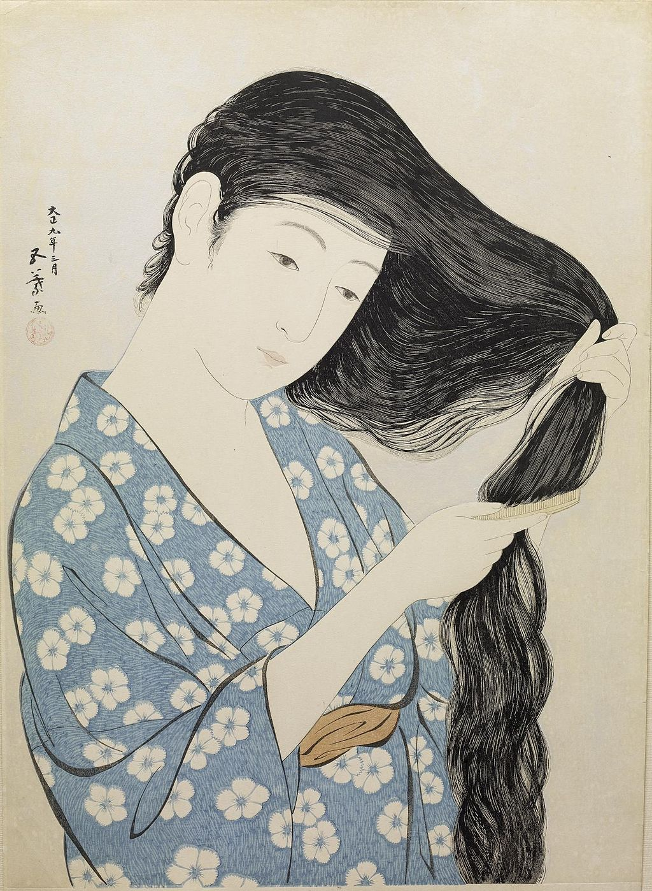

<head>
<meta charset="UTF-8" />
<meta name="keywords" content="drawing, painting" />
<meta name="description" content="drawings by Sunjy" />
<title>Sunjy</title>
<link rel="shortcut icon" type="image/x-icon" href="../../mImages/mCommon/favicon.ico" media="screen" />
<link rel="stylesheet" type="text/css" href="../../mCsses/mCommon/mCssA.css" />
<link rel="stylesheet" type="text/css" href="../../mCsses/mCommon/mCssB.css" />
<link rel="stylesheet" type="text/css" href="../../mCsses/mCommon/mCssC.css" />
<link rel="stylesheet" type="text/css" href="../../mCsses/mCommon/mCssD.css" />
<link rel="stylesheet" type="text/css" href="../../mCsses/mContent/mCssA.css" />
<link rel="stylesheet" type="text/css" href="../../mCsses/mContent/mCssB.css" />
<link rel="stylesheet" type="text/css" href="../../mCsses/mContent/mCssC.css" />
<link rel="stylesheet" type="text/css" href="../../mCsses/mContent/mCssD.css" />
</head>
<script type="text/javascript" src="../../mScripts/mContent/mContentAA.js" /></script>
<script type="text/javascript" src="../../mScripts/mContent/mContentAB.js" /></script>
<script type="text/javascript" src="../../mScripts/mContent/mContentAC.js" /></script>
<script type="text/javascript" src="../../mScripts/mContent/mContentAD.js" /></script>
<script type="text/javascript"></script> 
<script type="text/javascript">
document.write('<div class="mImgAbsolute"></div>');
/*
document.write('<p class="mFontSizeBColor" />From a white paper...</p>');
document.write('<table class="center"><tr><td>');
document.write('');
document.write('</td></tr></table>');
*/
</script>


<script type="text/javascript">
document.write('<p class="mFontSizeBColor" />Woman in Blue Combing Her Hair</p>');
document.write('<p class="mFontSizeSColor" />“Woman in Blue Combing Her Hair” by Goyō Hashiguchi. Goyō Hashiguchi (1880 – 1921) was an artist in Japan who’s perfectionism led to him publishing only a handful of prints, each one technically excellent with a nostalgic passion for the art form. <br><br>The exceptional wood cutting of the blocks to portray the intricacies of women’s hair was a Ukiyo-e tradition that Goyo had enthusiastically revived. The prints’ impact was enhanced by his restricted palette of a few primary colors. <br></p>');
document.write('<table class="center" /><tr><td>');
document.write('<br>The exceptional wood cutting of the blocks to portray the intricacies of women’s hair was a Ukiyo-e tradition that Goyo had enthusiastically revived. The prints’ impact was enhanced by his restricted palette of a few primary colors. <br>" />');
document.write('</td></tr></table>');
</script>


